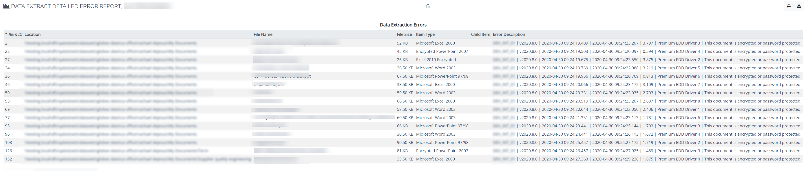

This report provides a list of extraction and OCR errors and status messages encountered during data extraction. The end of the report displays a list of password-protected files that includes the Item ID, Location, item type, file, and physical location for each file.
Complete the following selections:
Report Title: A report title is selected by default; change the title if needed.
Data Extract Job: (Optional) Select one or more data extract jobs for which the report is to be generated. If a specific job is not selected, the report will run against the entire case.
